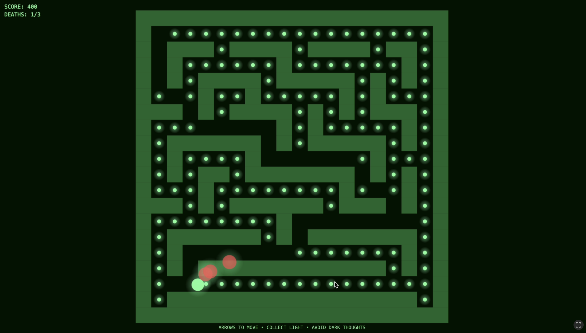
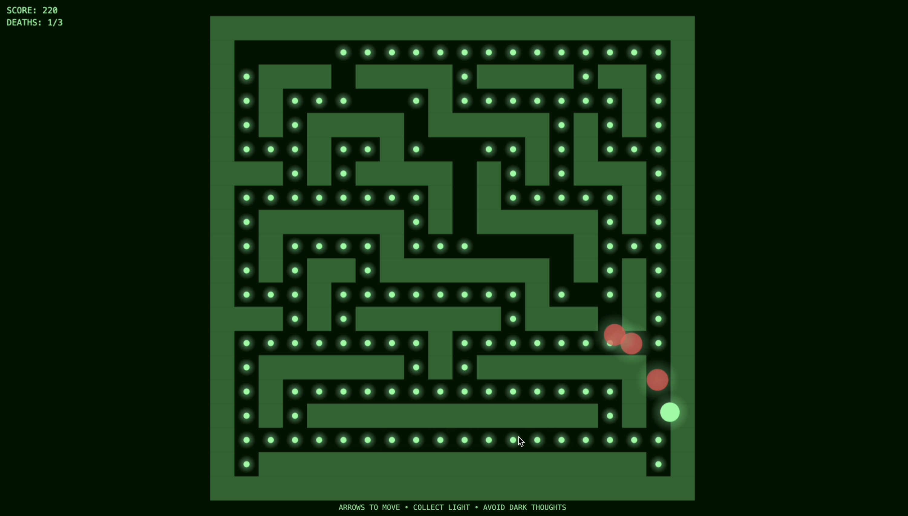
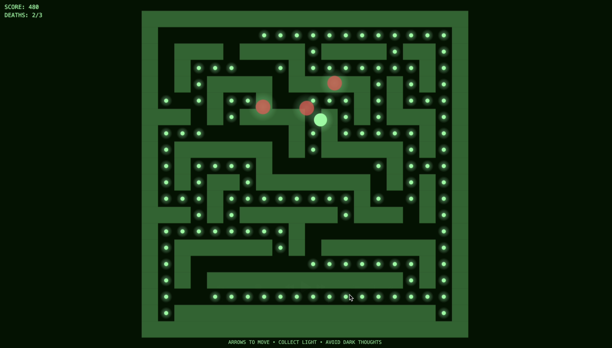

A creative project exploring mental health, neurodivergence through interaction, repetition and experimental game design.



I used HTML coding to create an interactive game inspired by my essay exploring how online games can support neurodivergent individuals through structure, repetition and controlled interaction. While my research focused on online gaming environments, I chose to reinterpret Pac-Man because of its instantly recognisable mechanics and repetitive maze system. This allowed me to translate theoretical research into a playable experience, communicating mental health struggles through interaction and atmosphere rather than direct explanation.
This explores the relationship between external structure and internal emotional instability. Pac-Man’s maze originally functions through strict rules, predictable routes and controlled movement, qualities that can feel comforting and grounding for neurodivergent players who may rely on routine and repetition for regulation. I wanted to challenge this sense of safety by transforming the ghosts into “dark thoughts.” Unlike the original game these figures move through walls freely, reflecting the intrusive and unavoidable nature of anxiety and negative thinking. Although the maze remains structured and familiar, the threats ignore its boundaries, symbolising how mental struggles can disrupt even environments designed to feel safe and controlled.
I drew inspiration from the terminal interfaces in Fallout, using a monochromatic green colour palette reminiscent of early computer systems. The restricted palette reduces visual noise and sensory overload while also creating a nostalgic, immersive atmosphere. This design decision connects directly to research discussed in my essay surrounding neurodivergent accessibility and the importance of calm, focused visual environments. The retro interface also reinforces themes of familiarity and escapism, suggesting digital spaces as places of comfort and emotional processing.
I experimented with maze scales, movement speeds and screen sizes to examine how interaction design can influence emotional response. Smaller mazes created feelings of comfort and security, whereas larger empty spaces introduced isolation, vulnerability and tension. These experiments helped demonstrate how subtle technical adjustments can significantly alter psychological experience, mirroring how small disruptions to routine can impact mental wellbeing.
This project ultimately became both a game and a visual metaphor for mental health. Rather than presenting neurodivergence or anxiety through explanation alone, the work encourages players to experience these emotions through movement, repetition, restriction and disruption. While the “dark thoughts” cannot be fully contained, the act of continuing to move, navigate and collect light becomes symbolic of persistence, regulation and reclaiming control within overwhelming mental spaces.